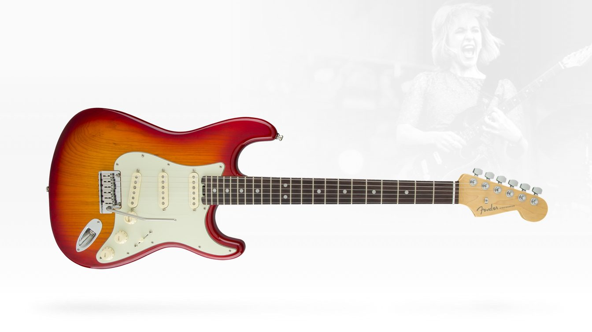
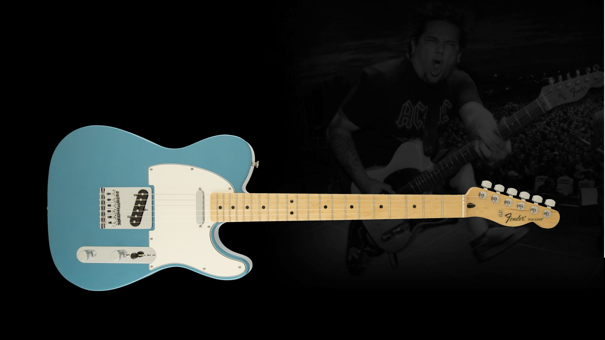
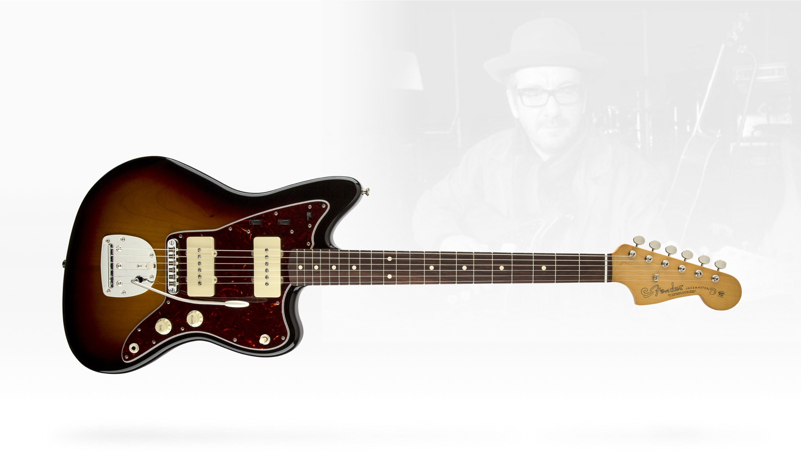
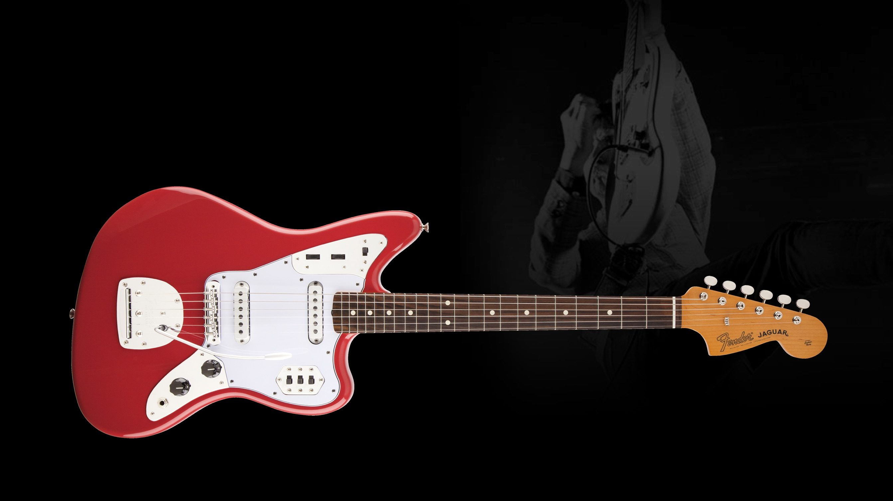
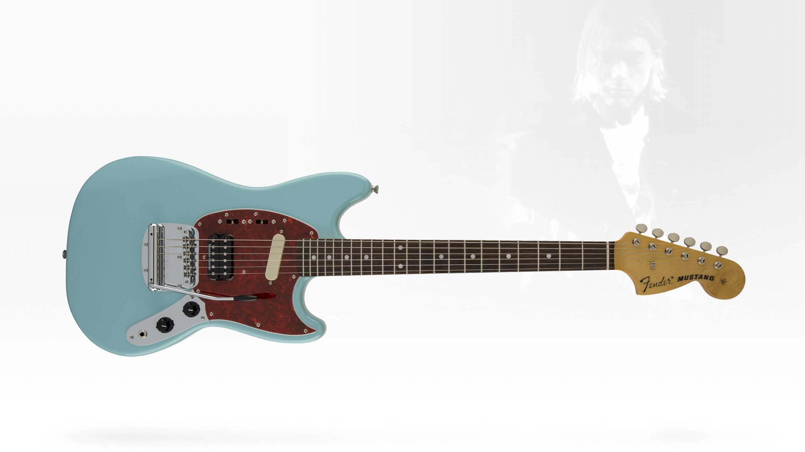

Каталог моделей Fender
Stratocaster

Основні характеристики:
- Рік випуску: 1954
- Звукознімачі: 3 сингл-звукознімачі
- Мензура: 25.5" (648 мм)
- Стиль: Універсальний звук для різних жанрів
- Відомі музиканти: Джимі Гендрікс, Ерік Клептон
Telecaster

Основні характеристики:
- Історичне значення: Одна з перших суцільнокорпусних гітар
- Дизайн: Простий та надійний
- Звук: Характерний дзвінкий тон ("twang")
- Відомі користувачі: Брюс Спрінгстін, Кіт Річардс
Jazzmaster

Основні характеристики:
- Цільова аудиторія: Джазові гітаристи (але популярна в інді-року)
- Теплий, насичений звук
- Глибокий нижній діапазон
- Унікальність: Спеціальна електроніка (ритм-схема)
- Дизайн: Оригінальна форма корпусу з вирізом для руки
Jaguar

Основні характеристики:
- Мензура: Коротка (24" / 610 мм)
- Електроніка: Складні перемикачі для гнучкого керування тоном
- Стиль: Ідеальна для сурф-року та експериментальної музики
- Особливість: Система приглушення струн "Floating Tremolo"
Mustang

Основні характеристики:
- Цільова аудиторія: Студенти (пізніше - гранж-музиканти)
- Компактні розміри
- Зменшена вага
- Популярність: Серед гітаристів гранжу (наприклад, Курт Кобейн)
- Ергономіка: Зручна для гри стоячи